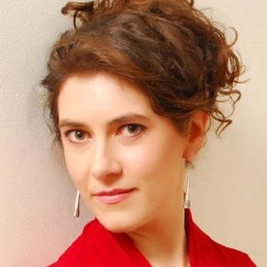

Marie Elizabeth Seager

Her opera roles include Charlotte, Idamante, Ramiro, Waltraute, The Sorceress (Dido and Aeneas), as well as Mrs Grose and Ms Jessel (The Turn of the Screw).
Past engagements include Gioconda (Laura) and Dialogues des Carmélites (Mère Marie) with Midsummer Opera in London. In 2019, she covered the second and third “Weird Sisters” in the world première of Pascal Dusapin’s Macbeth Underworld at La monnaie in Brussels.
Ms Seager is often engaged for concerts and recitals. Works she has performed include, but are not limited to: Bach’s Matthew Passion; Handel’s Messiah; Rossini’s Little solemn Mass and Stabat Mater; the Requiems of Mozart, Duruflé und Christopher Wood; and Elgar’s oratorio The Kingdom. She continues to sing Lieder in concerts all over Europe. Most notably, she has performed Olivier Messiaen’s demanding song cycle Harawi with the pianist Toms Ostrovskis in Riga.
She won the Cheryl Studer Masterclass Competition in Berlin and received special praise from the renowned Opera Magazine for her interpretation of Kundry fragments during the Nadine Denize masterclass at the Schola Cantorum in Paris.
French mezzo-soprano Marie Elizabeth Seager studied at the Guildhall School of Music and Drama in London.
Her opera roles include Charlotte, Idamante, Ramiro, Waltraute, The Sorceress (Dido and Aeneas), as well as Mrs Grose and Ms Jessel (The Turn of the Screw).
Past engagements include Gioconda (Laura) and Dialogues des Carmélites (Mère Marie) with Midsummer Opera in London. In 2019, she covered the second and third “Weird Sisters” in the world première of Pascal Dusapin’s Macbeth Underworld at La monnaie in Brussels.
Ms Seager is often engaged for concerts and recitals. Works she has performed include, but are not limited to: Bach’s Matthew Passion; Handel’s Messiah; Rossini’s Little solemn Mass and Stabat Mater; the Requiems of Mozart, Duruflé und Christopher Wood; and Elgar’s oratorio The Kingdom. She continues to sing Lieder in concerts all over Europe. Most notably, she has performed Olivier Messiaen’s demanding song cycle Harawi with the pianist Toms Ostrovskis in Riga.
She won the Cheryl Studer Masterclass Competition in Berlin and received special praise from the renowned Opera Magazine for her interpretation of Kundry fragments during the Nadine Denize masterclass at the Schola Cantorum in Paris.